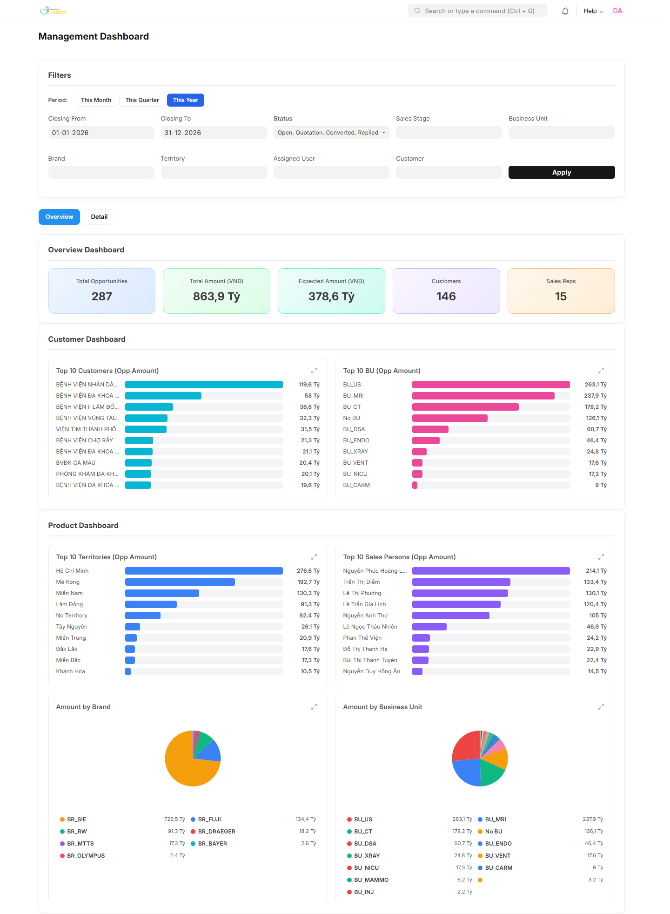
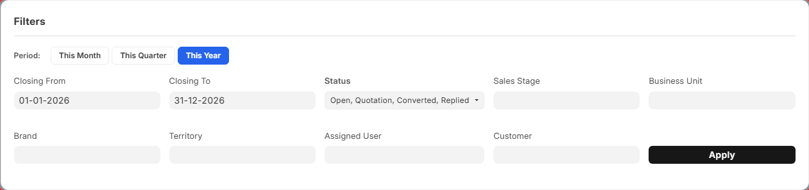
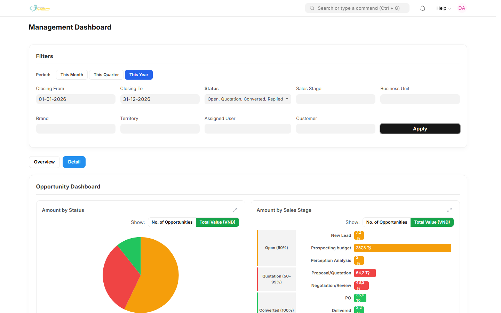
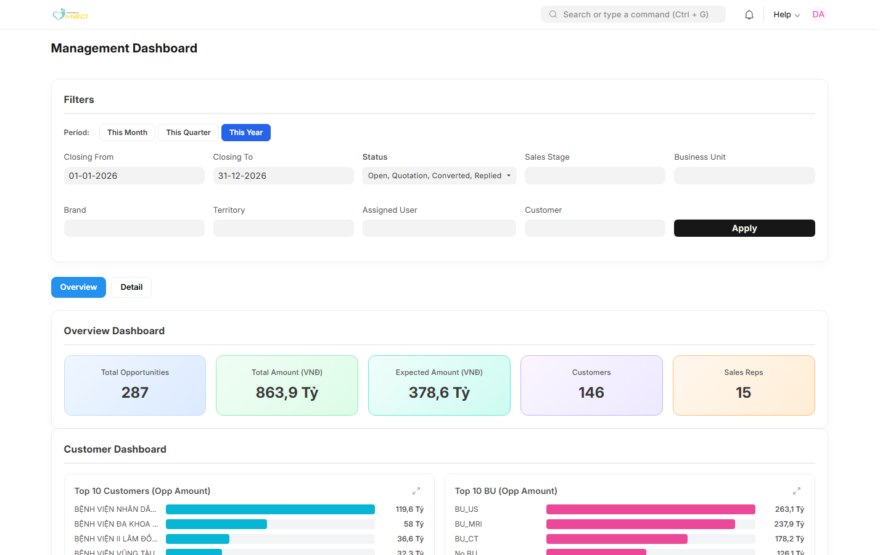
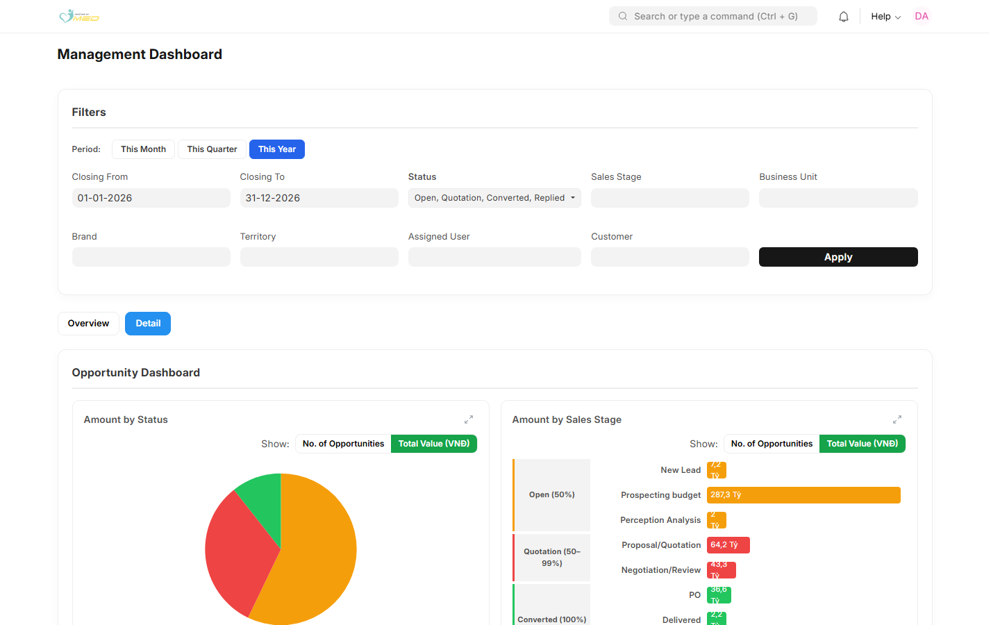

Management Dashboard — Hướng dẫn sử dụng
Mục đích
Management Dashboard giúp lãnh đạo kinh doanh theo dõi toàn bộ pipeline cơ hội (Opportunity) của team: tổng số cơ hội, doanh số, phân bổ theo khách hàng, khu vực, nhân viên kinh doanh, thương hiệu và Business Unit.
Trang gồm hai chế độ xem — Overview (tổng quan) và Detail (phân tích chi tiết theo trạng thái, giai đoạn bán hàng và người phụ trách).
Trước khi bắt đầu
- Bạn đã đăng nhập ERP
- Tài khoản có vai trò iMED Sales Manager, iMED BU Manager hoặc iMED Sales Admin
- Dữ liệu Opportunity đã được nhập trên hệ thống
Các bước thực hiện
Bước 1: Mở Management Dashboard
Từ thanh tìm kiếm Desk, gõ Management Dashboard hoặc vào menu CRM → Management Dashboard.

Bước 2: Thiết lập bộ lọc
Phần Filters nằm phía trên, áp dụng chung cho cả tab Overview và Detail.

| Thành phần | Mô tả |
|---|---|
| This Month / This Quarter / This Year | Chọn nhanh khoảng ngày dự kiến chốt deal |
| Closing From / Closing To | Lọc theo ngày dự kiến chốt (expected_closing) |
| Status | Open, Quotation, Converted, Replied, Lost, Closed… |
| Sales Stage | Giai đoạn bán hàng iMED |
| Business Unit / Brand | Lọc theo BU và thương hiệu trên dòng hàng |
| Territory / Assigned User / Customer | Lọc theo khu vực, nhân viên phụ trách, khách hàng |
| Apply | Làm mới toàn bộ KPI và biểu đồ |
Bước 3: Nhấn Apply
Sau khi chọn bộ lọc, nhấn Apply — tất cả KPI và biểu đồ sẽ được làm mới theo cùng một tập dữ liệu.

Bước 4: Xem tab Overview
Nhấn tab Overview để xem tổng quan team.

KPI tổng hợp

| KPI | Ý nghĩa |
|---|---|
| Total Opportunities | Tổng số cơ hội sau lọc |
| Total Amount (VND) | Tổng giá trị cơ hội |
| Expected Amount (VND) | Giá trị kỳ vọng (theo xác suất) |
| Customers | Số khách hàng phân biệt |
| Sales Reps | Số nhân viên kinh doanh có cơ hội |
Biểu đồ Overview gồm Top 10 Customers, Top 10 BU, Top 10 Territories, Top 10 Sales Persons, Amount by Brand và Amount by BU. Nhấn biểu tượng mở rộng trên biểu đồ để xem fullscreen kèm tóm tắt bộ lọc.
Bước 5: Xem tab Detail
Nhấn tab Detail để phân tích sâu từng cơ hội.

Biểu đồ Detail

- Amount by Status — biểu đồ tròn; chuyển No. of Opportunities / Total Value (VND)
- Amount by Sales Stage — funnel lồng Status → Sales Stage; chuyển count/value
- Amount by Expected Closing Month — biểu đồ đường; Monthly / Accumulated
- Amount by Assigned User — bảng tổng hợp; mở rộng từng dòng để xem danh sách cơ hội
Phụ lục — Vai trò và phạm vi dữ liệu
| Vai trò | Tab | Phạm vi |
|---|---|---|
| iMED Sales Manager | Overview + Detail | Toàn bộ cơ hội (theo bộ lọc) |
| iMED BU Manager | Detail | Chỉ BU được gán từ Position |
| iMED Sales Admin | Overview + Detail | Toàn bộ cơ hội |
| iMED Sales | — | Không truy cập — dùng My Sales Dashboard |
Kết quả mong đợi
Sau khi nhấn Apply:
- KPI và mọi biểu đồ phản ánh cùng một bộ lọc
- Không còn dữ liệu cũ trước khi Apply
- Nếu không có dữ liệu: KPI = 0; biểu đồ hiển thị trạng thái trống (No data)
Xử lý sự cố thường gặp
| Triệu chứng | Nguyên nhân có thể | Cách xử lý |
|---|---|---|
| Không mở được trang | Thiếu quyền (ví dụ iMED Sales) | Dùng My Sales Dashboard hoặc liên hệ admin |
| Không thấy tab Overview | Đăng nhập với vai trò BU Manager | Bình thường — chỉ xem tab Detail |
| Biểu đồ không đổi | Chưa nhấn Apply | Nhấn Apply và đợi tải xong |
| Số liệu = 0 | Bộ lọc quá hẹp | Nới rộng Closing From/To hoặc bỏ bớt điều kiện |
| Không mở rộng biểu đồ | Lỗi tải dữ liệu | Nhấn Apply lại hoặc tải lại trang |